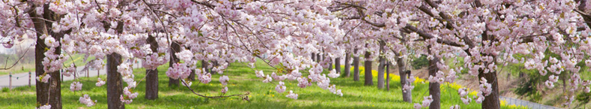

Where Can I Enjoy Cherry Blossoms?
Where Can I Enjoy Cherry Blossoms?#
Question 4: Where can I enjoy “Hanami” (Cherry blossom viewing) in the spring?

Note
Please hit “Click to show” to see Python codes.
import pandas as pd
import numpy as np
import altair as alt
from datetime import date
alt.data_transformers.disable_max_rows()
pd.options.mode.chained_assignment = None #suppress warning
# use small dataset (5000 rows)
url = 'https://raw.githubusercontent.com/UBC-MDS/data_viz_wrangled/main/data/Trees_data_sets/small_vancouver_trees.csv'
# make sure date_planted has a data type "datetime"
data = pd.read_csv(url, parse_dates=[5])
# remove columns that will not be used for visualization
df = data.drop(columns=['Unnamed: 0','std_street','assigned','street_side_name','civic_number','plant_area','curb','tree_id','cultivar_name','root_barrier'], axis=1)
# rename columns
df.rename(columns={
'on_street':'street',
'species_name':'species',
'neighbourhood_name':'neighbourhood',
'genus_name':'genus',
'height_range_id':'height_range'
}, inplace=True)
# convert data type
df['diameter'] = df['diameter'].astype(int)
df['on_street_block'] = df['on_street_block'].astype(str)
# add calculated fields from other columns
df['allergen'] = np.where(df['genus'].isin(['ALNUS','FAGUS','BETULA','TYPHA','CASTANEA','ULMUS','CORYLUS','TSUGA','LARIX','ACER','QUERCUS','POPULUS']), True, False)
df['year'] = pd.DatetimeIndex(df['date_planted']).year
df['year'].fillna(0, inplace=True)
df['year'] = df['year'].astype(int)
#df['height_range_desc'] = df['height_range'].apply(get_height_range_desc)
df['st_block'] = df['on_street_block'] + ' ' + df['street']
cherry_df = df.drop(columns=['date_planted','height_range','allergen','year'])
cherry_df = cherry_df[cherry_df['genus']=='PRUNUS']
I love flowers and enjoy looking at them from early spring to frost. I enjoy all kinds of flowers, but cherry blossoms are something special to me, and I look forward to the full bloom every spring! Amazingly, this city has way more cherry trees than Tokyo, Japan. (Really? Yes, I know so because I’m from there!)
In Japan, people like Somei-Yoshino (Prunus x yedoensis). Even weather forecasts on TV broadcast a “Cherry Blossom Forecast” when the season is approaching. Cherry trees usually start blooming in late March. Some types bloom early while others are late.
I categorized 3 types of cherry trees:
Popular “Yoshino” trees. Species name is “X Yedoensis”. Early bloomers are called “Fudan zakura” which species name is “Sargentii”. Late bloomers are called “Kanzan” and “Ukon” which species names are “Serrulata”.
# add 'type' column to cherry_df
conditions = [
(cherry_df['species'] == 'X YEDOENSIS'),
(cherry_df['species'] == 'SARGENTII'),
(cherry_df['species'] == 'SERRULATA'),
(~cherry_df['species'].isin(['X YEDOENSIS','SARGENTII','SERRULATA']))
]
choices = ['Popular', 'Early bloomer', 'Late bloomer','Other']
cherry_df['type'] = np.select(conditions, choices, default=None)
cherry_df.head(10)
| street | species | neighbourhood | diameter | genus | common_name | on_street_block | latitude | longitude | st_block | type | |
|---|---|---|---|---|---|---|---|---|---|---|---|
| 5 | ADERA ST | CERASIFERA | Kerrisdale | 1 | PRUNUS | PISSARD PLUM | 6300 | 49.228686 | -123.143600 | 6300 ADERA ST | Other |
| 6 | BROUGHTON ST | SERRULATA | West End | 24 | PRUNUS | KWANZAN FLOWERING CHERRY | 900 | 49.286839 | -123.131659 | 900 BROUGHTON ST | Late bloomer |
| 7 | CHURCHILL ST | CERASIFERA | Shaughnessy | 9 | PRUNUS | PISSARD PLUM | 5500 | 49.235948 | -123.141068 | 5500 CHURCHILL ST | Other |
| 13 | MALKIN AV | CERASIFERA | Strathcona | 12 | PRUNUS | PISSARD PLUM | 1000 | 49.273039 | -123.082040 | 1000 MALKIN AV | Other |
| 14 | NASSAU DRIVE | SERRULATA | Victoria-Fraserview | 16 | PRUNUS | KWANZAN FLOWERING CHERRY | 1700 | 49.218128 | -123.070469 | 1700 NASSAU DRIVE | Late bloomer |
| 19 | W 64TH AV | X YEDOENSIS | Marpole | 15 | PRUNUS | AKEBONO FLOWERING CHERRY | 400 | 49.212336 | -123.115185 | 400 W 64TH AV | Popular |
| 23 | E 6TH AV | SERRULATA | Mount Pleasant | 26 | PRUNUS | PINK PERFECTION CHERRY | 500 | 49.265306 | -123.091927 | 500 E 6TH AV | Late bloomer |
| 27 | VICTORIA DRIVE | SARGENTII | Grandview-Woodland | 9 | PRUNUS | RANCHO SARGENT CHERRY | 1600 | 49.270114 | -123.065648 | 1600 VICTORIA DRIVE | Early bloomer |
| 28 | E 20TH AV | CERASIFERA | Kensington-Cedar Cottage | 14 | PRUNUS | PISSARD PLUM | 2100 | 49.251586 | -123.060609 | 2100 E 20TH AV | Other |
| 38 | KERR ST | AVIUM | Killarney | 34 | PRUNUS | MAZZARD CHERRY | 6100 | 49.227756 | -123.040990 | 6100 KERR ST | Other |
# Vancouver map
url_geojson = 'https://raw.githubusercontent.com/UBC-MDS/exploratory-data-viz/main/data/local-area-boundary.geojson'
data_geojson_remote = alt.Data(url=url_geojson, format=alt.DataFormat(property='features',type='json'))
vancouver_map = alt.Chart(data_geojson_remote).mark_geoshape(
color = 'gray', opacity= 0.5, stroke='white').encode(
).project(type='identity', reflectY=True)
# create legend widget
select_type = alt.selection_single(fields=['type'], bind='legend')
sort_types = ['Popular','Early bloomer','Late bloomer','Other']
cherry_map = alt.Chart(cherry_df).mark_circle(size=15).encode(
longitude='longitude',
latitude='latitude',
tooltip=[alt.Tooltip('neighbourhood:N', title='Neighbourhood: '),
alt.Tooltip('st_block:N', title='Street Block: '),
alt.Tooltip('height_range_desc:O', title='Height Range: '),
alt.Tooltip('diameter:Q', title='Diameter (inches)'),
alt.Tooltip('age:O', title='Age (years): ')
],
color=alt.Color('type:N', scale=alt.Scale(scheme='redpurple', reverse=True), title='Cherry tree type', sort=sort_types),
size=alt.condition(select_type, alt.value(75), alt.value(15))
).project(type='identity', reflectY=True
).add_selection(select_type)
map_2 = (vancouver_map + cherry_map
).properties(width=800, height=400, title=alt.TitleParams('Map 2 - Cherry trees on Vancouver streets',
subtitle='Clink on the legend to highlight selected cherry tree type',
subtitleColor='purple',
anchor='middle'
)
)
map_2.configure_view(stroke=None)
Click on one of the legends. Trees with the selected type will be displayed on the map with larger circles. Hover your mouse on circles to see details of the trees. You can find where they are located and how tall/wide they are. Some trees have age information as well.